# 创建资源文件
在 VS 中创建资源文件：
创建 windos 桌面应用程序的空项目（不然 VS 会自动给我们创建一个模板）
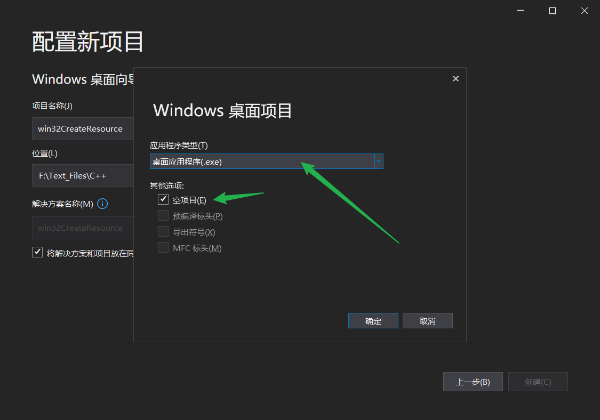
添加资源文件
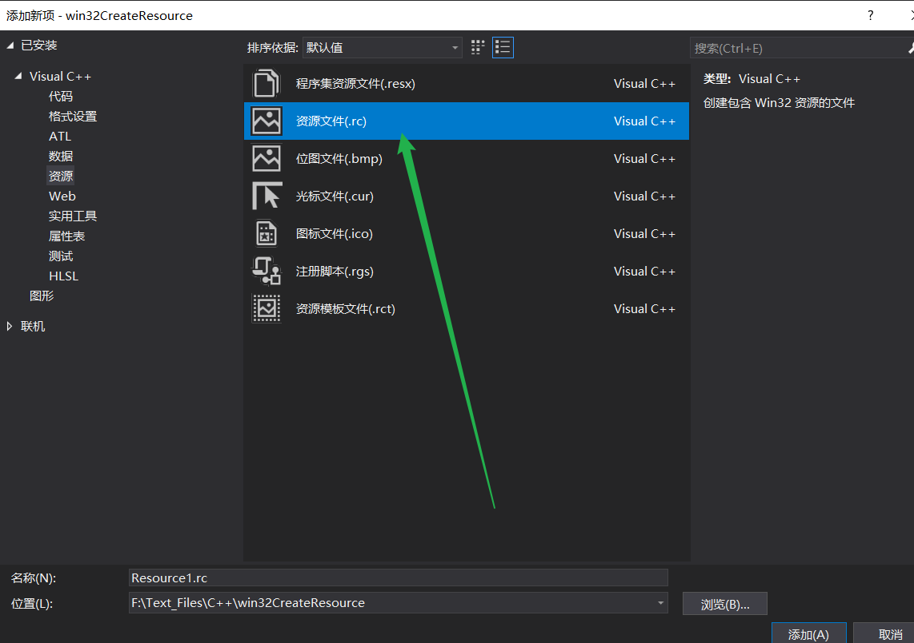
右键添加 Dialog (对话框) 资源
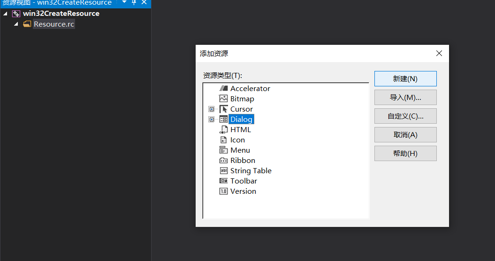
获得如下界面
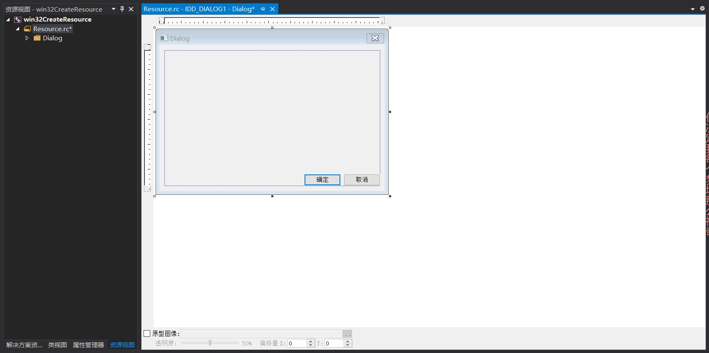
随便配置一下
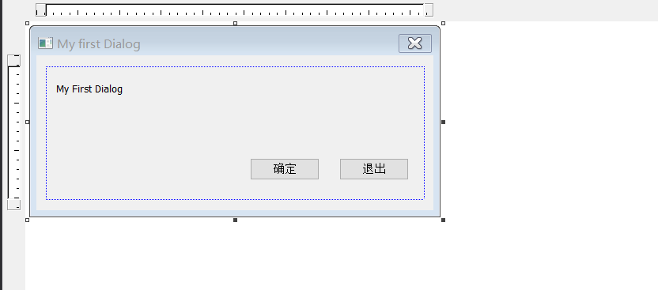
观察一下
resource.h(创建资源文件时会自动生成头文件，里面定义着各种宏) 这个头文件是有编译器自动填写的，一般我们不需要修改里面的内容，使用资源的时候需要包含头文件。
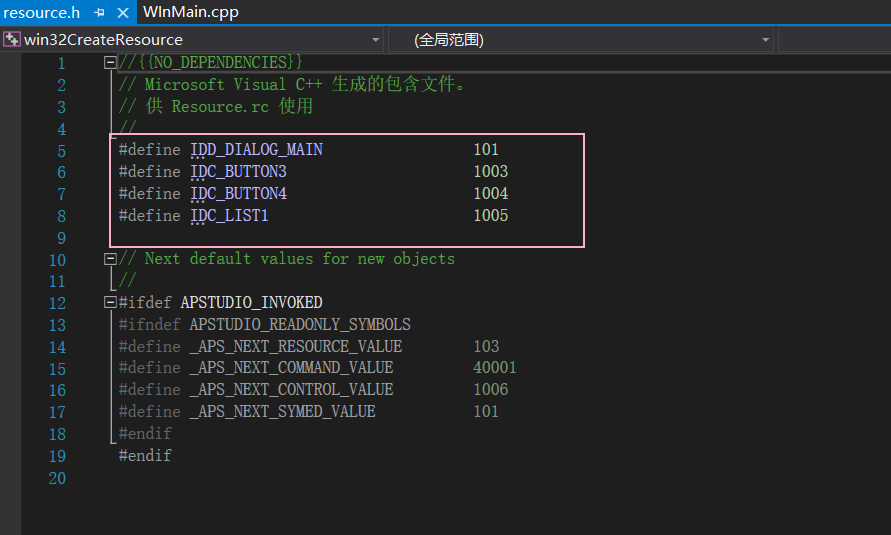
# 通过 DialogBox 创建对话框
DialogBox 函数介绍
INT_PTR DialogBox( | |
HINSTANCE hInstance, // handle to module | |
LPCTSTR lpTemplate, // dialog box template | |
HWND hWndParent, // handle to owner window | |
DLGPROC lpDialogFunc // dialog box procedure | |
); |
# 定义 Dialog 消息处理函数
BOOL CALLBACK DialogProc( | |
HWND hwndDlg, // handle to dialog box | |
UINT uMsg, // message | |
WPARAM wParam, // first message parameter | |
LPARAM lParam // second message parameter | |
) | |
{ | |
switch(uMsg) | |
{ | |
case WM_INITDIALOG : | |
MessageBox(NULL,TEXT("WM_INITDIALOG"),TEXT("INIT"),MB_OK); | |
return TRUE ; | |
case WM_COMMAND : | |
switch (LOWORD (wParam)) | |
{ | |
case IDC_BUTTON_OK : | |
MessageBox(NULL,TEXT("IDC_BUTTON_OK"),TEXT("OK"),MB_OK); | |
return TRUE; | |
case IDC_BUTTON_OUT: | |
MessageBox(NULL,TEXT("IDC_BUTTON_OUT"),TEXT("OUT"),MB_OK); | |
EndDialog(hwndDlg, 0); | |
return TRUE; | |
} | |
break ; | |
} | |
return FALSE ; | |
} |
Dialog 消息处理函数与 Windows 消息处理函数不一样。
在 Dialog 消息处理函数中：
1、处理过的消息，返回 TRUE。
2、不处理的消息，返回 FALSE。
在 Windows 消息处理函数中：
1、处理过的消息，返回 FALSE (既 0)。
2、不处理的消息，调用 DefWindowProc () 处理。
# 获取文本框内容
重新画一个对话框
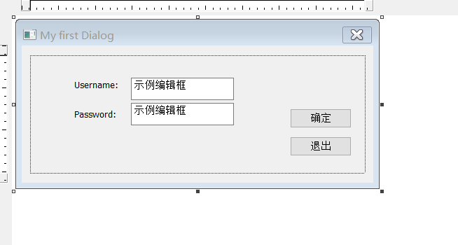
点击确定的时候就获取文本框内的内容
1、获取文本框句柄：
HWND hEditUser = GetDlgItem (hDlg,IDC_EDIT_USER); | |
hDlg 对话框句柄 | |
IDC_EDIT_USER 编号 |
2、获取文本框内容
TCHAR szUserBuff [0x50]; | |
GetWindowText (hEditUser,szUserBuff,0x50); | |
hEditUser 文本框句柄 | |
szUserBuff 输出缓冲区 |
只贴关键部分了
switch (LOWORD(wParam)) | |
{ | |
case IDC_BUTTON3: | |
hEditUser = GetDlgItem(hwndDlg, IDC_EDIT_UserName); | |
hEditPass = GetDlgItem(hwndDlg, IDC_EDIT_PassWord); | |
GetWindowText(hEditUser, szUserBuff, 0x50); | |
GetWindowText(hEditPass, szPassBuff, 0x50); | |
MessageBox(NULL, szUserBuff, szPassBuff, MB_OK); | |
MessageBox(NULL, TEXT("IDC_BUTTON_OK"), TEXT("OK"), MB_OK); | |
return TRUE; |
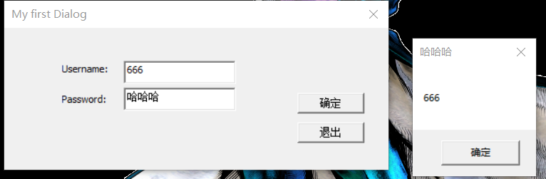
# 消息断点
虽然创建 Dialog 对话框避我们创建 Windows 窗口的步骤更简单一些，但其实步骤一点都没有少，我们逆向分析一个 Win32 程序使还是可以找到其消息处理函数。
但实际上一个窗口程序可能会有非常多的功能，我们找其消息处理函数是非常耗时耗力的，针对这种情况我们可以借助工具。
在 OD 中点击 W 图标查看窗口
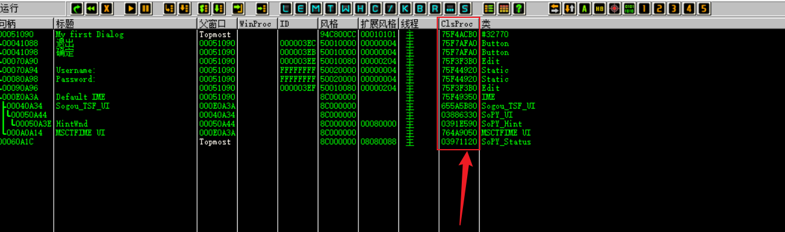
我们发现，函数处理地址都是 7 开头的高位地址，既这些消息处理函数都是系统给我们提供的，但最终都会调用我们的消息处理函数。
明白了这个流程，我们就可以先在调用系统处理函数那里下断点，然后追回程序自己的消息处理函数。
我就在 x32dbg 上演示了
选择窗口
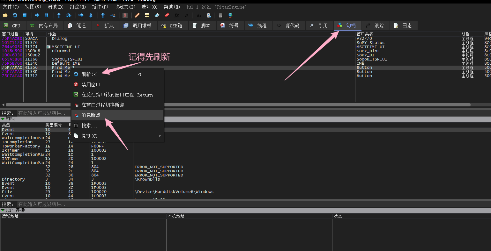
选择消息类型
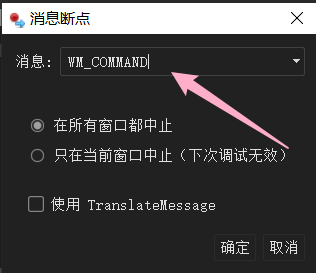
我们要找到的是子窗口的消息处理函数，发给父窗口的消息是 WM_COMMAND ，对于按钮控件，无非是鼠标点下去或抬起来，要确定按钮是按下触发消息处理还是松开触发，自己点一下就能确定了。
鼠标左键抬起的消息类型的宏定义： #define WM_LBUTTONUP 0x0202 。
设置消息断点后，我们鼠标点击一下按钮就直接触发断点了：
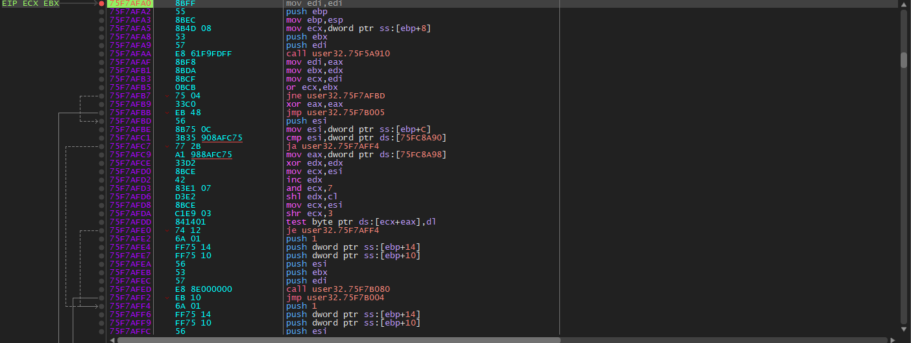
当程序断在这里的时候我们打开内存布局，在 .text 区段下内存访问断点，这里我们可以选择重复设置。

F9 运行，断在了我们的程序里。
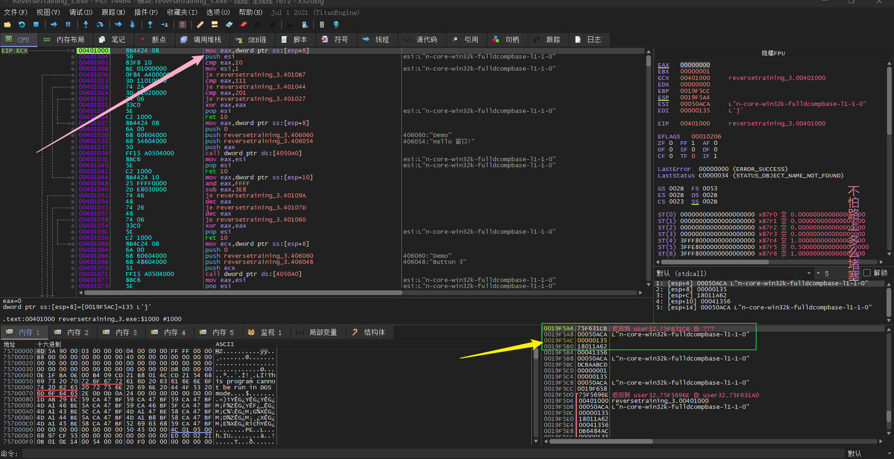
但要注意的是这里断下的消息处理函数可能并不是要处理我们的消息
注意消息处理函数的堆栈空间看其 ESP+8 的位置，其值并不是 WM_COMMAND (0x111)
所以我们的让程序接着跑起来，直到 ESP+8 的值是 0x111，但因下了内存断点，就算是按下 F9 还是一次执行一条指令。
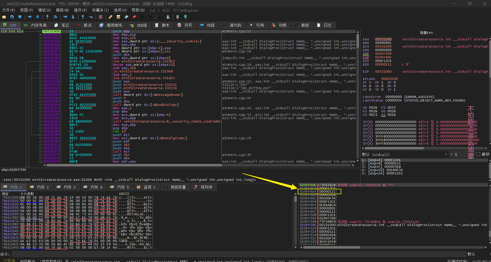
直到确定了 ESP+8 的值是 0x111，这就找到了本次按钮的消息处理函数。